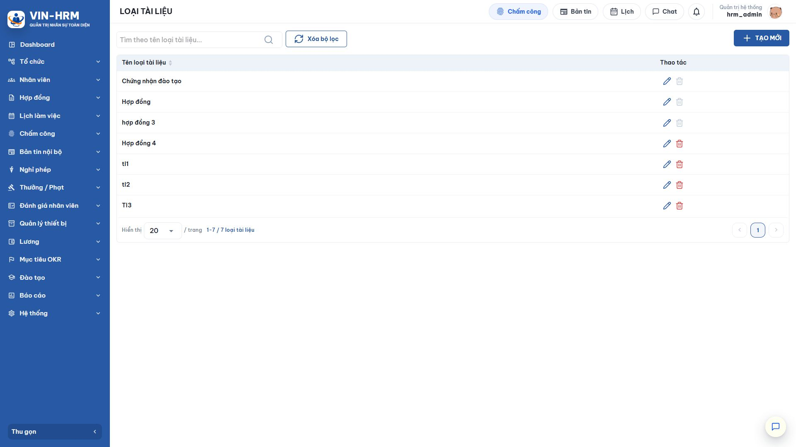
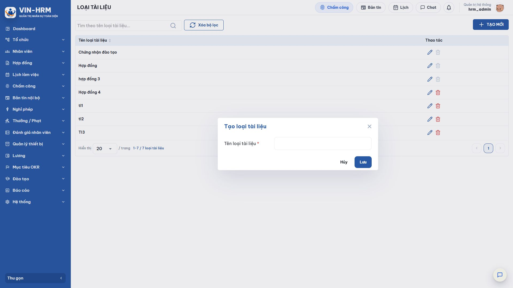
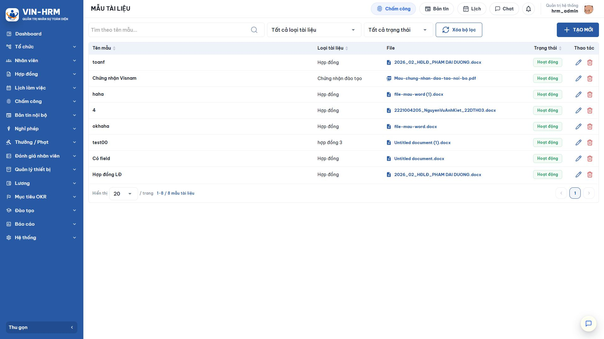
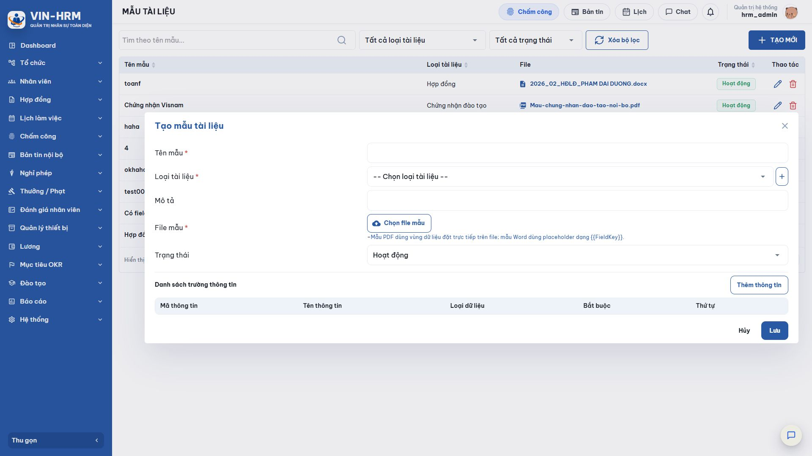
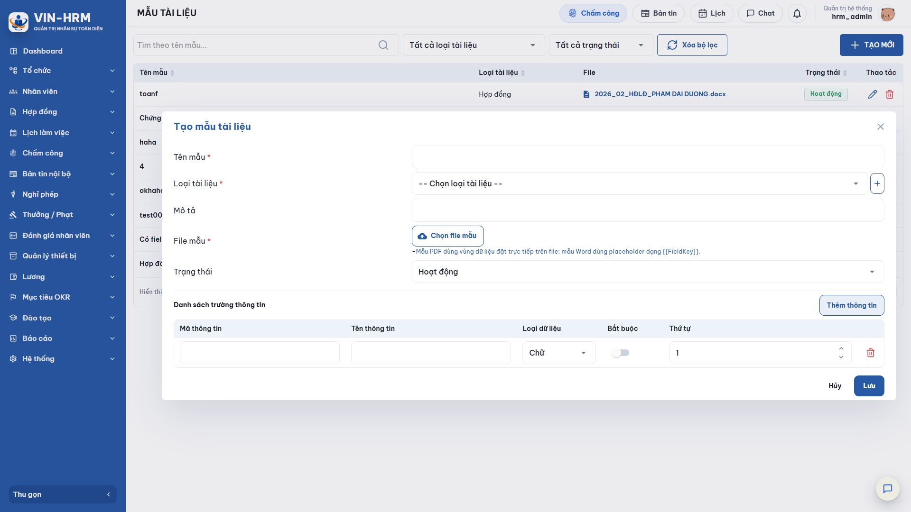
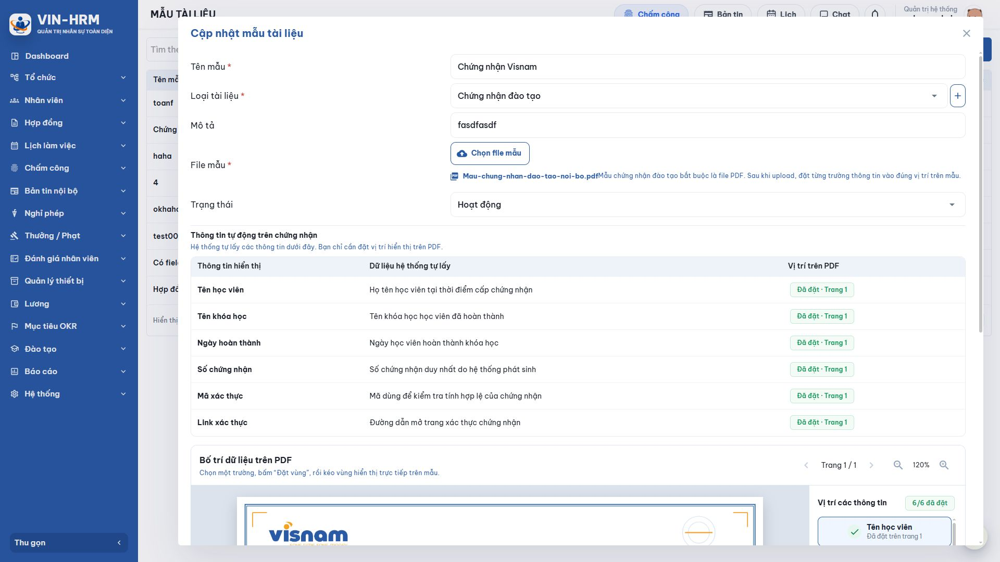
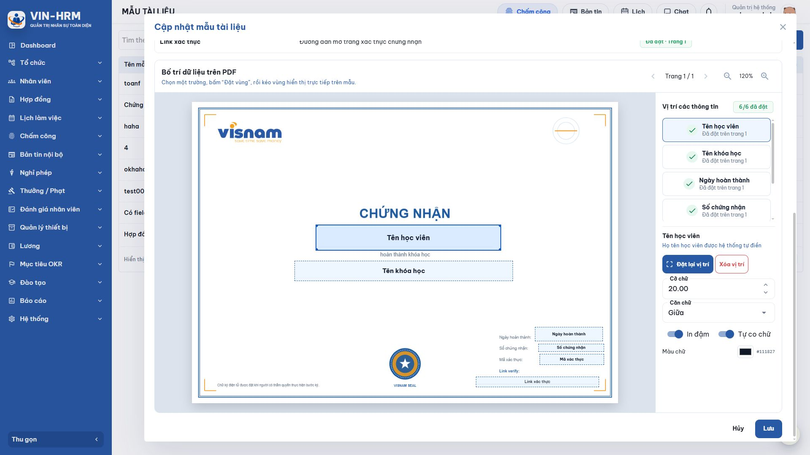

1. Mục đích và phạm vi
Loại tài liệu là danh mục dùng để phân nhóm. Mẫu tài liệu là một file Word hoặc PDF kèm quy tắc điền dữ liệu. Khi nghiệp vụ cần tạo tài liệu, người dùng chọn mẫu đang hoạt động, nhập các thông tin được yêu cầu và hệ thống tạo tài liệu theo bố cục đã chuẩn bị.
Tài liệu này hướng dẫn toàn bộ thao tác tìm kiếm, tạo, sửa, ngừng sử dụng và xóa Loại tài liệu/Mẫu tài liệu. Nội dung cũng giải thích từng lựa chọn của trường dữ liệu, cách chuẩn bị file Word, cách đặt vùng trên PDF và trường hợp đặc biệt của chứng nhận đào tạo.
2. Mối quan hệ giữa Loại tài liệu và Mẫu tài liệu
| Thành phần | Vai trò |
|---|---|
| Loại tài liệu | Là nhãn phân nhóm, ví dụ “Hợp đồng” hoặc “Chứng nhận đào tạo”. Một loại có thể chứa nhiều mẫu. |
| Mẫu tài liệu | Là bản thiết kế cụ thể gồm tên, loại, file nguồn, trạng thái và danh sách trường dữ liệu. Mỗi mẫu chỉ thuộc một loại. |
| Trường dữ liệu | Là thông tin sẽ được nhập hoặc lấy tự động khi tạo tài liệu, ví dụ họ tên, ngày ký, số tiền hoặc lựa chọn Có/Không. |
| Tài liệu kết quả | Là bản được sinh từ file mẫu sau khi các trường dữ liệu đã có giá trị. |
| Thứ tự thiết lập nên áp dụng Tạo Loại tài liệu trước, chuẩn bị file Word/PDF đúng quy cách, sau đó tạo Mẫu tài liệu và khai báo các trường. Cuối cùng phải chạy thử trong nghiệp vụ trước khi ban hành. |
3. Quyền truy cập và phạm vi dữ liệu
Mở nhóm Hệ thống, sau đó chọn Loại tài liệu hoặc Mẫu tài liệu. Người dùng cần có quyền Cấu hình hoặc quyền Tài liệu mẫu. Nếu không thấy chức năng, nút tạo hoặc nút sửa, liên hệ quản trị viên phân quyền.
Danh mục được quản lý theo doanh nghiệp đang đăng nhập, không cấu hình riêng theo chi nhánh. Người dùng của doanh nghiệp khác không nhìn thấy các loại và mẫu của doanh nghiệp hiện tại.
4. Quản lý Loại tài liệu

4.1. Đọc danh sách
| Thành phần | Ý nghĩa và cách sử dụng |
|---|---|
| Tìm theo tên loại tài liệu | Nhập toàn bộ hoặc một phần tên. Hệ thống hỗ trợ tìm theo tên có dấu và dạng không dấu; kết quả tự tải lại sau khi ngừng nhập trong thời gian ngắn. |
| Xóa bộ lọc | Xóa từ khóa và tải lại toàn bộ danh sách. |
| Tên loại tài liệu | Tên phân nhóm được hiển thị khi tạo hoặc lọc Mẫu tài liệu. Có thể chọn tiêu đề cột để sắp xếp tăng/giảm. |
| Biểu tượng bút | Mở biểu mẫu sửa tên. |
| Biểu tượng thùng rác | Xóa loại chưa được mẫu nào sử dụng. Biểu tượng màu xám nghĩa là loại đã có mẫu liên kết nên không thể xóa. |
| Hiển thị / trang | Chọn số dòng trên một trang và dùng nút chuyển trang ở góc phải. |
4.2. Tạo Loại tài liệu

- Chọn TẠO MỚI.
- Nhập Tên loại tài liệu. Trường này bắt buộc, tối đa 200 ký tự.
- Dùng tên mô tả đúng nhóm nghiệp vụ, ví dụ “Quyết định nhân sự”, “Biên bản bàn giao” hoặc “Hợp đồng”.
- Chọn Lưu. Nếu tên đã tồn tại, đổi sang tên khác; hệ thống không cho phép trùng tên trong cùng doanh nghiệp.
4.3. Sửa và xóa
Chọn biểu tượng bút, sửa tên rồi chọn Lưu. Việc đổi tên làm thay đổi tên loại hiển thị trên các Mẫu tài liệu đang liên kết, nhưng không thay file mẫu và trường dữ liệu của các mẫu đó.
Muốn xóa, chọn biểu tượng thùng rác và xác nhận. Nếu loại đã được ít nhất một Mẫu tài liệu sử dụng, nút xóa bị vô hiệu hóa. Cần chuyển các mẫu sang loại khác hoặc xử lý các mẫu liên quan trước; không nên xóa dữ liệu chỉ để làm sạch danh sách.
5. Quản lý Mẫu tài liệu

5.1. Bộ lọc và các cột
| Thành phần | Ý nghĩa và cách sử dụng |
|---|---|
| Tìm theo tên mẫu | Tìm theo toàn bộ hoặc một phần tên. Có thể nhập từ khóa có dấu hoặc không dấu. |
| Tất cả loại tài liệu | Hiển thị mọi loại. Chọn một loại để chỉ xem các mẫu thuộc nhóm đó. |
| Tất cả trạng thái | Tất cả trạng thái: xem toàn bộ; Hoạt động: mẫu được phép chọn trong nghiệp vụ; Ngừng hoạt động: mẫu được giữ để tra cứu nhưng không đưa vào danh sách chọn cho hồ sơ mới. |
| Xóa bộ lọc | Đưa cả ba điều kiện về mặc định rồi tải lại danh sách. |
| Tên mẫu | Tên nhận biết của mẫu. Tên phải duy nhất trong doanh nghiệp. |
| Loại tài liệu | Nhóm mà mẫu đang thuộc về. |
| File | Tên file Word/PDF đã lưu. Chọn vào tên file để mở hoặc tải xem tùy trình duyệt. |
| Trạng thái | Nhãn xanh “Hoạt động” hoặc nhãn “Ngừng hoạt động”. |
| Thao tác | Biểu tượng bút để cập nhật; thùng rác để xóa khi mẫu chưa phát sinh dữ liệu liên quan. |
5.2. Tạo Mẫu tài liệu

- Chọn TẠO MỚI.
- Nhập Tên mẫu, chọn Loại tài liệu, nhập Mô tả nếu cần.
- Chọn File mẫu đúng định dạng. Với Word, hệ thống đọc các mã thay thế trong file; với PDF, hệ thống mở trình bố trí vùng dữ liệu.
- Chọn Trạng thái.
- Kiểm tra hoặc bổ sung danh sách trường thông tin.
- Chọn Lưu sau khi toàn bộ trường bắt buộc, mã thay thế hoặc vị trí PDF đã hợp lệ.
5.3. Ý nghĩa từng trường thông tin chung
| Trường | Ý nghĩa, giới hạn và khuyến nghị |
|---|---|
| Tên mẫu * | Bắt buộc, tối đa 200 ký tự và không trùng tên mẫu khác trong doanh nghiệp. Nên gồm loại tài liệu, đối tượng hoặc phiên bản, ví dụ “Hợp đồng lao động - Khối văn phòng - 2026”. |
| Loại tài liệu * | Bắt buộc. Dùng để phân nhóm và lọc danh sách. Nút dấu cộng cho phép tạo nhanh một loại mới nếu tài khoản có quyền phù hợp; tên tạo nhanh vẫn tối đa 200 ký tự và không được trùng. |
| Mô tả | Không bắt buộc, tối đa 500 ký tự. Nên ghi mục đích, đối tượng, thời điểm áp dụng hoặc ghi chú về dữ liệu cần nhập. |
| File mẫu * | Bắt buộc. Hỗ trợ .docx và .pdf; file Word cũ dạng .doc không được hỗ trợ. Khi thay file trong chế độ cập nhật, cần kiểm tra lại toàn bộ mã hoặc vị trí vì file cũ được thay thế. |
| Trạng thái | Hoạt động: xuất hiện trong danh sách mẫu có thể sử dụng; Ngừng hoạt động: không dùng cho hồ sơ mới nhưng vẫn giữ dữ liệu và lịch sử liên quan. Mẫu mới mặc định là Hoạt động. |
| Nên ngừng hoạt động thay vì xóa mẫu đã dùng Nếu mẫu đã được gắn với phiên bản khóa học, đã phát sinh chứng nhận hoặc có dữ liệu liên quan, hệ thống từ chối xóa. Mở biểu tượng bút, đổi Trạng thái thành “Ngừng hoạt động” và lưu để giữ tính toàn vẹn của hồ sơ cũ. |
6. Khai báo trường thông tin

6.1. Ý nghĩa các cột
| Cột | Cách khai báo |
|---|---|
| Mã thông tin | Khóa kỹ thuật dùng để ghép dữ liệu với file mẫu, tối đa 100 ký tự. Nên dùng chữ không dấu, không khoảng trắng; file Word chỉ nhận chữ cái, chữ số, dấu gạch dưới và dấu chấm. Ví dụ EmployeeName hoặc Contract.SignDate. |
| Tên thông tin | Nhãn tiếng Việt hiển thị cho người nhập dữ liệu, tối đa 200 ký tự, ví dụ “Họ và tên nhân viên”. |
| Loại dữ liệu | Quyết định kiểu ô nhập và cách kiểm tra dữ liệu khi nghiệp vụ sử dụng mẫu. |
| Bắt buộc | Bật: người dùng phải cung cấp giá trị trước khi tạo/tải tài liệu; tắt: có thể để trống. Với trường hệ thống của chứng nhận đào tạo, các trường chuẩn được đánh dấu bắt buộc tự động. |
| Thứ tự | Số nguyên dương xác định thứ tự hiển thị của các ô nhập. Nên đánh số liên tục 1, 2, 3… để biểu mẫu dễ theo dõi. |
| Thùng rác | Xóa dòng trường khỏi mẫu đang chỉnh sửa. Với Word, sau khi xóa trường phải xóa mã tương ứng trong file; nếu không, hệ thống sẽ báo không khớp khi lưu. |
6.2. Bốn lựa chọn Loại dữ liệu
| Lựa chọn | Ý nghĩa và khi nên dùng |
|---|---|
| Chữ | Hiển thị ô nhập văn bản. Dùng cho họ tên, địa chỉ, chức danh, ghi chú, mã hồ sơ hoặc nội dung có cả chữ và số. |
| Số | Hiển thị ô nhập số. Dùng cho số tiền, số lượng, tỷ lệ hoặc giá trị cần giới hạn ở dữ liệu số. |
| Ngày | Hiển thị bộ chọn ngày. Cách trình bày ngày tuân theo định dạng ngày của hệ thống; dùng cho ngày ký, ngày hiệu lực, ngày hoàn thành. |
| Có/Không | Hiển thị danh sách “Có” và “Không”. Dùng cho điều kiện nhị phân, ví dụ có thử việc, có phụ lục hoặc đã nhận bàn giao. |
6.3. Quy tắc chung
- Mã thông tin và Tên thông tin không được để trống.
- Không được khai báo hai Mã thông tin giống nhau trong cùng một mẫu; việc so khớp không phân biệt chữ hoa/chữ thường.
- Với mẫu PDF phải có ít nhất một trường và mọi trường đều phải được đặt vùng.
- Với mẫu Word, danh sách trường và danh sách mã thay thế trong file phải khớp hai chiều.
7. Chuẩn bị Mẫu Word (.docx)
Mẫu Word giữ nguyên bố cục, phông chữ, bảng biểu và phần văn bản cố định của file. Tại nơi cần dữ liệu động, chèn mã theo dạng {{MãThôngTin}}. Ví dụ, nếu Mã thông tin là EmployeeName, trong file phải có {{EmployeeName}}.
7.1. Cách tạo đúng mã thay thế
- Mở file bằng Microsoft Word và xác định từng vị trí cần hệ thống điền dữ liệu.
- Gõ hai dấu ngoặc nhọn mở, Mã thông tin và hai dấu ngoặc nhọn đóng, ví dụ {{ContractNo}}.
- Mã chỉ nên gồm chữ cái tiếng Anh, chữ số, dấu gạch dưới hoặc dấu chấm; không dùng khoảng trắng và ký tự tiếng Việt có dấu.
- Lưu file ở định dạng .docx, không lưu dạng .doc.
- Upload file vào biểu mẫu. Hệ thống đọc các mã theo thứ tự xuất hiện đầu tiên và tự tạo danh sách trường ban đầu.
- Đổi Tên thông tin sang tiếng Việt dễ hiểu, chọn đúng Loại dữ liệu/Bắt buộc, rồi lưu.
7.2. Kiểm tra khớp hai chiều
| Thông báo | Cách xử lý |
|---|---|
| Mã trường chưa có trong file mẫu | Mở file Word và thêm đúng {{MãThôngTin}}, hoặc xóa trường dư khỏi danh sách. |
| File mẫu có mã chưa khai báo trường | Thêm một dòng trường có Mã trùng với mã trong Word, hoặc xóa mã không dùng khỏi file. |
| Không tìm thấy mã dạng {{MãThôngTin}} | Kiểm tra file đúng .docx và mã có đủ hai cặp ngoặc nhọn. File vẫn có thể được tải lên nhưng sẽ không có trường dữ liệu tự động. |
| Định dạng của giá trị thay thế Dữ liệu được điền vào vị trí mã thay thế và kế thừa cách trình bày của đoạn văn bản trong Word. Hãy định dạng mã trước khi upload để kết quả có đúng phông chữ, cỡ chữ và căn lề mong muốn. |
8. Chuẩn bị Mẫu PDF (.pdf)
Với PDF, file gốc được dùng làm nền cố định. Hệ thống không tìm mã trong nội dung PDF; thay vào đó, người quản trị khai báo trường rồi vẽ một vùng hiển thị cho từng trường trực tiếp trên từng trang.

8.1. Đặt vùng hiển thị
- Upload file PDF. Nếu là mẫu thông thường, chọn Thêm thông tin và khai báo các trường trước.
- Trong phần Bố trí dữ liệu trên PDF, chọn một trường ở bảng bên phải.
- Chọn Đặt vị trí hoặc Đặt lại vị trí.
- Giữ và kéo chuột trên PDF để tạo vùng chứa dữ liệu. Vùng phải nằm hoàn toàn trong trang.
- Lặp lại cho đến khi bộ đếm cho biết toàn bộ trường đã được đặt.
- Dùng nút chuyển trang và phóng to/thu nhỏ để thao tác chính xác trên PDF nhiều trang.

8.2. Ý nghĩa các lựa chọn trình bày
| Lựa chọn | Ý nghĩa |
|---|---|
| Trang | Cho biết trang PDF đang xem và trang chứa vùng của trường. Có thể chuyển trang bằng nút mũi tên. |
| Phóng to/thu nhỏ | Chỉ thay đổi tỷ lệ xem để đặt vùng chính xác, không làm thay đổi kích thước trang PDF kết quả. |
| Đặt lại vị trí | Vẽ lại vùng của trường khi vị trí hoặc kích thước chưa đúng. |
| Xóa vị trí | Gỡ vùng hiện tại. Mẫu không thể lưu nếu còn trường chưa đặt. |
| Cỡ chữ | Cỡ chữ ban đầu khi điền dữ liệu, cho phép từ 6 đến 96. Chọn theo kích thước vùng và thiết kế của file nền. |
| Căn chữ - Trái | Căn giá trị sát phía trái của vùng; phù hợp với đoạn nội dung hoặc dữ liệu đặt sau nhãn. |
| Căn chữ - Giữa | Căn giá trị giữa vùng; phù hợp với tiêu đề, họ tên trên chứng nhận. |
| Căn chữ - Phải | Căn giá trị sát phía phải; phù hợp với số, ngày hoặc dữ liệu cần thẳng cột. |
| In đậm | Bật để dữ liệu được vẽ bằng kiểu chữ đậm; tắt để dùng chữ thường. |
| Tự co chữ | Khi bật, hệ thống giảm dần cỡ chữ đến mức tối thiểu để giá trị dài vừa vùng. Khi tắt, dữ liệu giữ cỡ đã chọn và phần vượt vùng có thể bị cắt. |
| Màu chữ | Chọn màu trực quan. Hệ thống lưu theo mã màu dạng #RRGGBB hoặc #AARRGGBB; mặc định là màu xanh đen #111827. |
9. Trường hợp đặc biệt: Chứng nhận đào tạo
Khi Loại tài liệu có tên Chứng nhận đào tạo, hệ thống áp dụng bộ quy tắc riêng để phục vụ mô-đun Đào tạo. File bắt buộc là PDF; sau khi upload, hệ thống tự thêm các trường chuẩn. Người quản trị không tự thêm/xóa trường chuẩn mà chỉ đặt vị trí và kiểu trình bày.
| Thông tin hiển thị | Mã hệ thống | Dữ liệu được lấy |
|---|---|---|
| Tên học viên | EmployeeName | Họ tên học viên tại thời điểm cấp chứng nhận. |
| Tên khóa học | CourseName | Tên khóa học học viên đã hoàn thành. |
| Ngày hoàn thành | CompletedAt | Ngày học viên hoàn thành khóa học. |
| Số chứng nhận | CertificateNo | Số chứng nhận duy nhất do hệ thống phát sinh. |
| Mã xác thực | VerificationCode | Mã dùng để kiểm tra tính hợp lệ của chứng nhận. |
| Liên kết xác thực | VerificationUrl | Đường dẫn mở trang xác thực. Khi hợp lệ, PDF kết quả tạo một liên kết có thể bấm. |
| Mã nhân viên | EmployeeCode | Trường được hệ thống hỗ trợ bổ sung nếu nghiệp vụ cần hiển thị mã nhân viên. |
| Không đổi tên loại đặc biệt tùy tiện Chức năng nhận diện “Chứng nhận đào tạo” theo tên/định danh chuẩn. Việc đổi tên loại có thể làm mất bộ trường tự động hoặc khiến mẫu không xuất hiện trong cấu hình phiên bản khóa học. Chỉ thay đổi sau khi có đánh giá nghiệp vụ và kỹ thuật. |
9.1. Điều kiện để dùng trong Đào tạo
- Mẫu phải thuộc loại Chứng nhận đào tạo, file PDF và trạng thái Hoạt động.
- Sáu trường chuẩn phải có đủ, đúng mã và được đánh dấu bắt buộc.
- Mỗi trường phải có vùng nằm trong trang PDF, cỡ chữ từ 6 đến 96.
- Tại phiên bản khóa học, chọn mẫu chứng nhận và quy trình duyệt/ký chứng nhận phù hợp.
10. Mô-đun sử dụng và cấu hình liên quan
| Nơi sử dụng / cấu hình | Ý nghĩa |
|---|---|
| Quy trình phê duyệt - Upload tài liệu | Khi một bước yêu cầu tải tài liệu, người xử lý có thể chọn nguồn “Mẫu tài liệu” hoặc “Upload file”. Danh sách chỉ lấy các mẫu đang Hoạt động. Các trường được hiển thị theo loại dữ liệu và trạng thái Bắt buộc. |
| Đào tạo - Phiên bản khóa học | Chọn mẫu PDF hoạt động thuộc loại Chứng nhận đào tạo để hệ thống sinh chứng nhận sau khi học viên hoàn thành và quy trình duyệt/ký được đáp ứng. |
| Hệ thống - Cấu hình ngày | Trường kiểu Ngày sử dụng định dạng ngày của hệ thống khi hiển thị ô chọn ngày. Cần thống nhất định dạng trước khi người dùng nhập dữ liệu. |
| Hệ thống - Phân quyền | Quyền Cấu hình hoặc Tài liệu mẫu cho phép mở hai chức năng. Chỉ cấp cho người chịu trách nhiệm quản trị nội dung và file mẫu. |
| Phạm vi doanh nghiệp | Loại và Mẫu tài liệu thuộc doanh nghiệp, không chia theo chi nhánh. Cần đặt tên đủ rõ nếu nhiều đơn vị cùng dùng chung. |
Không có một khóa cấu hình chung bắt buộc khác để bật chức năng. Tuy nhiên, trạng thái mẫu, quyền người dùng, định dạng ngày, cấu hình phiên bản khóa học và cấu hình bước quy trình quyết định mẫu có xuất hiện và hoạt động đúng hay không.
10.1. Sửa, thay file và ngừng hoạt động
| Thao tác | Điều cần lưu ý |
|---|---|
| Sửa tên/mô tả/loại | Tên mới vẫn phải duy nhất. Nếu đổi loại, kiểm tra quy tắc đặc biệt của loại mới, nhất là Chứng nhận đào tạo. |
| Thay file Word | Danh sách mã trong file mới phải khớp danh sách trường. Kiểm tra lại định dạng, bảng biểu và vị trí thay thế. |
| Thay file PDF | Phải kiểm tra và đặt lại vùng vì kích thước trang hoặc bố cục có thể khác file cũ. |
| Ngừng hoạt động | Mở sửa, chọn Trạng thái “Ngừng hoạt động”, lưu. Mẫu không còn xuất hiện cho hồ sơ mới nhưng dữ liệu cũ được giữ. |
| Xóa | Chỉ thực hiện khi chắc chắn mẫu chưa dùng. Khi cơ sở dữ liệu có liên kết, hệ thống từ chối xóa và yêu cầu ngừng hoạt động. |
11. Lỗi thường gặp và cách xử lý
| Hiện tượng / thông báo | Cách xử lý |
|---|---|
| Tên loại tài liệu đã tồn tại | Đổi tên loại; không tạo hai loại chỉ khác chữ hoa/chữ thường. |
| Tên mẫu đã tồn tại | Đặt tên khác thể hiện rõ phạm vi hoặc phiên bản. |
| Chỉ hỗ trợ Word (.docx) hoặc PDF (.pdf) | Chuyển file về đúng định dạng. Không đổi phần mở rộng bằng cách sửa tên file; cần dùng chức năng Lưu thành/Xuất của phần mềm soạn thảo. |
| File .doc không còn được hỗ trợ | Mở file bằng Word và lưu lại dưới dạng .docx. |
| Mã thông tin bị trùng | Giữ một mã duy nhất; phân biệt các trường bằng tên mã rõ ràng. |
| Mã trong Word và danh sách trường không khớp | Đối chiếu hai chiều; mỗi mã trong file phải có một trường và mỗi trường phải xuất hiện trong file. |
| Mẫu PDF cần ít nhất một trường | Chọn Thêm thông tin, khai báo trường rồi đặt vùng trên PDF. |
| Trường chưa được đặt vùng | Mở trình bố trí, chọn trường và kéo vùng nằm hoàn toàn trong trang. |
| Cỡ chữ không hợp lệ | Nhập giá trị từ 6 đến 96. |
| PDF không hợp lệ hoặc có mật khẩu | Dùng file PDF đọc được, không bảo vệ bằng mật khẩu; xuất lại PDF nếu cần. |
| Mẫu chứng nhận bắt buộc là PDF | Chuyển file thiết kế chứng nhận sang PDF trước khi upload. |
| Không xóa được Loại tài liệu | Loại đang được mẫu sử dụng. Chuyển hoặc xử lý các mẫu liên quan trước. |
| Không xóa được Mẫu tài liệu | Mẫu đã có dữ liệu liên quan. Chuyển trạng thái sang Ngừng hoạt động. |
| Mẫu không xuất hiện trong nghiệp vụ | Kiểm tra trạng thái Hoạt động, đúng loại, đúng doanh nghiệp và quyền truy cập; với chứng nhận, kiểm tra file PDF và loại Chứng nhận đào tạo. |
12. Danh sách kiểm tra trước khi đưa vào sử dụng
- Loại tài liệu có tên rõ ràng, không trùng và đúng nhóm nghiệp vụ.
- Tên mẫu mô tả đúng phạm vi; mô tả nêu đủ đối tượng và thời điểm áp dụng.
- File là .docx hoặc .pdf, mở được và không có mật khẩu.
- Mẫu Word có đủ mã dạng {{MãThôngTin}}; danh sách trường khớp hai chiều với file.
- Mỗi trường có Mã, Tên, Loại dữ liệu, trạng thái Bắt buộc và Thứ tự phù hợp.
- Mẫu PDF có đủ vùng, đúng trang, đúng căn chữ, cỡ chữ, màu và lựa chọn Tự co chữ.
- Mẫu chứng nhận có đủ trường chuẩn và đã được chọn trong phiên bản khóa học.
- Trạng thái đang Hoạt động nếu muốn dùng cho hồ sơ mới; mẫu cũ được chuyển Ngừng hoạt động thay vì xóa.
- Đã chạy thử một tài liệu với dữ liệu ngắn, dài, ngày, số và Có/Không; đã kiểm tra file kết quả ở 100% tỷ lệ.
- Quyền Cấu hình/Tài liệu mẫu chỉ được cấp cho người quản trị phù hợp.